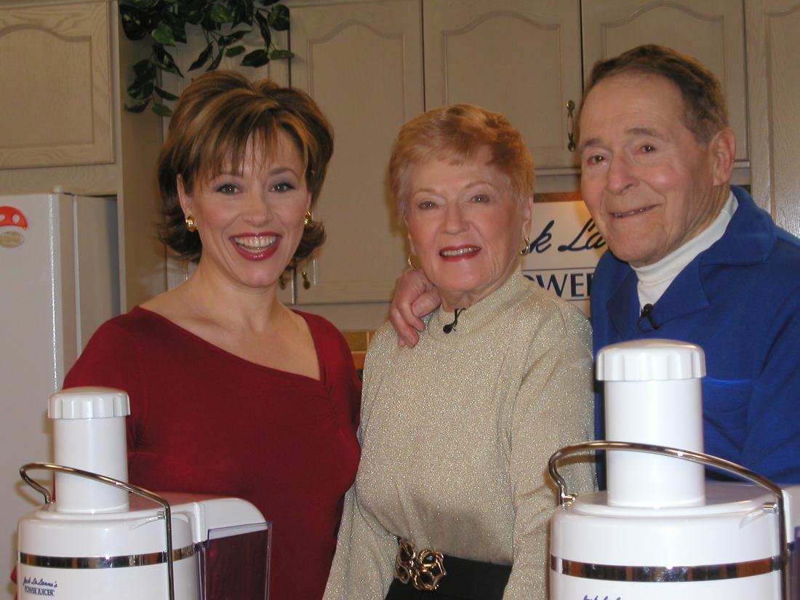

My Mentor Jack Lalanne ~ The King of Fitness

Jack LaLanne had a lot of firsts in the fitness and health industry Here are some of the biggest!
- Opened the first modern health spa
- Invented the first Leg extension machine
- Invented the first weight selector for cable machines
- Conceived the deign for the squat machine (now known as the smith machine)
- One of the original network television personalities and an original television pioneer
- The first to have a nationally syndicated exercise show on television
- The first to have athletes working out with weights
- The first to have women working out with weights
- The first to have the elderly working out with weights
- The first to have a combination Health Food Bar and Gym
- The first to have a weight loss Instant Breakfast meal replacement drink (protein powder)
- The first to have a Coed health club
- The first to combine weight training with nutrition
- The first to have an edible snack nutrition bar
- The first to sell vitamins and exercise equipment on television
- The first to teach scientific body building by changing the program every 2 to 3 weeks
- The first to encourage the physically challenged to exercise… to work around their disabilities
TV SHOW: In the early 1950’s, through the new medium of television Jack’s message spread like wildfire. Reaching millions, America soon got the message of “Get off your seat and on to your feet”. He was magnetic and the public responded, his show was an instant hit both in America and abroad. Jack LaLanne believed in daily, vigorous systematic exercise and proper diet. “My workout is my obligation to life.”

OLYMPUS DIGITAL CAMERA
Jack LaLanne POWER AND FUSION JUICERS: Jack juiced for over seven decades beginning with a press that would press the juice from the fruit or vegetables. He believed juicing to be one of the factors that made up the fountain of youth. To quote him, “Your blood stream is your river of life and when you nourish the trillions of cells in your body with live and vital nutrients, you feel alive and vital.” He truly believed in His Jack LaLanne Power and Fusion Juicers and often said, “If I thought that there was anything better, don’t you think, I’d have it?” He always believed that giving your body the right fuel was like giving your automobile the right gas.
In celebration of his life and 100th birthday Tri Star, manufacturer of the Jack LaLanne fusion Juicer, introduced a documentary, “Anything Is Possible” on his life which you can view on Roku, Jack LaLanne channel.
LEGACY: Jack LaLanne lived by what he said to others and he did it for over 80 years. In other words Jack walked the walk and talked the talk! Much of what Jack advocated through his teaching and beliefs has become common knowledge today. Today’s doctors and fitness experts all acknowledge daily systematic exercise and proper diet as the principle keys to a longer healthier life. Millions of fans all over the world followed his philosophy and benefited from his teachings through TV, news articles, lectures, Health Spas, juicing and birthday feats like swimming from Alcatraz handcuffed, with ankles chained and pulling a 1000 pound boat, to Fisherman’s wharf in San Francisco. (see Feats).
Jack is also known for his innovations, in the 1950’s, of the first Protein drinks, the first protein bars, the first resistance bands called the Glamour Stretcher and Easy Way Conditioner. (see Firsts)
He and his wife Elaine, who at a spry 91, is carrying on his legacy with sons, Jon, Dan, and daughter, Dr. Yvonne LaLanne, traveled around the world lecturing and inspiring people to greater heights through exercise and nutrition. When asked about the difference between then and now Jack often laughed and replied with a gleam in his eye, “It is most gratifying for me to see that everything that I was preaching and advocating over 80 years has come to fruition. Then I was a crackpot, today I am an authority…and believe me I can’t die, it would ruin my image.”
But on January 23, 2011 at the age of 96, Jack LaLanne did pass away. He is now God’s personal trainer. Don’t worry Jack, your image won’t be ruined…..you will always be a legend!!